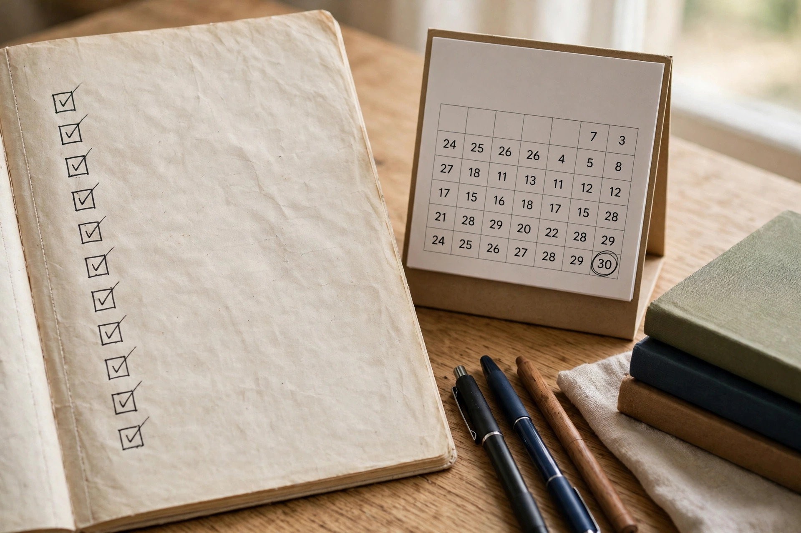

Seven days left. The roll number slip is in your hand, and your brain is swinging between "I've got this" and "I know nothing." Take a breath. The final week before a PPSC or FPSC exam is not about learning more — it is about protecting what you already know.
This checklist gives you a day-by-day plan for the last seven days, a subject-wise list of what to revise, and the exam-day essentials most aspirants forget.
The Golden Rules of the Final Week
Five rules first — break one and the whole week works against you.
- No new topics. If you have not studied it in three months, you will not master it in seven days.
- Revise, don't re-read. Test yourself: cover the answers, recall the facts, open the book only for misses.
- Keep your sleep schedule. All-nighters destroy recall on exam day. Sleep 7–8 hours every night, especially the last two.
- One mock test only — and early. Take your final full mock 3–4 days before the exam, never the day before.
- Protect your confidence. Stop comparing your preparation with toppers' posts and group chats. Peak on exam day.
Your 7-Day Final Revision Plan
One job per day — finish it, tick it off, rest.
- Day 7 — Audit. Mark every subject "strong" or "weak". Gather your error notebook, short notes and formula sheets. Revise weakest subjects first. Sort exam logistics — centre, transport, documents.
- Day 6 — English & Urdu. Grammar rules, prepositions, synonyms/antonyms, famous ashaar with their poets. Pure revision: 100 mixed MCQs in the morning, error review in the evening. Practice English MCQs and Urdu MCQs in timed bursts.
- Day 5 — Islamiat & Pakistan Studies. Ghazwat, Khulfa-e-Rashideen, Quranic facts; Movement timeline, constitutions, rivers and dams. Short notes only. Attempt 100 MCQs across both subjects and log every miss.
- Day 4 — Everyday Science, GK & Current Affairs. Body basics, vitamins, SI units, inventions, world capitals and rivers, plus the last 6–12 months of current affairs. Note the freshest facts on a single page.
- Day 3 — Math & Computer + full mock. Morning: percentages, ratios, averages, algebra, computer fundamentals. Afternoon: one full 100-MCQ mock in 90 minutes with negative marking, using our PPSC exam simulator. Evening: review every wrong answer.
- Day 2 — Error notebook day. Nothing new today. Read your error notebook cover to cover — the highest-value revision you can do. Re-attempt the questions you got wrong, skim your one-page notes, and pack your exam bag tonight.
- Day 1 — Rest. Glance at your formula sheet and one-page notes for one hour in the morning — then stop. Walk, eat well, be in bed early. No mock tests, no group discussions.

Subject-Wise Final Revision Checklist
- English: tenses, voice, narration, prepositions, articles, synonyms/antonyms, idioms, one-word substitutions. Revise the rules you kept forgetting — our PPSC one paper preparation guide covers the full grammar plan.
- Urdu: mutazad and muradif alfaz, famous ashaar and their poets, idioms (muhavrat), basic grammar. Urdu questions repeat heavily — your error notebook matters more here than any book.
- Islamiat: first revelation, Ghazwat dates, Khulfa-e-Rashideen, Pillars of Islam, important Surahs. Islamiat MCQs confirm the facts are fresh.
- Pakistan Studies: Movement timeline, 1940 Resolution, constitutions of 1956, 1962 and 1973, national symbols, rivers, dams, and the firsts. Revise from short notes, not a 400-page book.
- Everyday Science & GK: body systems, vitamins, SI units, inventions and inventors, world capitals and rivers, Nobel facts. Our Everyday Science MCQs suit a fast final sweep.
- Current Affairs: last 6–12 months only — heads of state, summits, sports, cabinet and judiciary changes, major awards. Anything older than a year is almost never asked.
- Basic Math & Computer: percentages, ratios, averages, age problems, simple interest, squares and cubes to 30; MS Office shortcuts, HTTP, RAM, CPU. The easiest marks in the paper — don't let rust cost you them.
Your Error Notebook Is Your Best Teacher This Week
If you kept an error notebook, this week it becomes your most important book — PPSC repeats questions constantly, so every question you got wrong once is one you are likely to face again. Read it twice: mid-week and on Day 2. For each entry, ask why you got it wrong: a forgotten fact, a misread question, or a careless guess? Fix the reason, not just the answer. If you never made one, start now with your mock test mistakes — our guide on how to make an error notebook for MCQ exams shows the format.
What NOT to Do in the Final Week
- Don't start a new book or course. A new source creates confusion, not knowledge. Trust what you already studied.
- Don't take a mock test the day before the exam. A low score will wreck your sleep and confidence. Your last mock belongs on Day 3.
- Don't study in group chats. Last-week group discussions are 90% panic and 10% facts — and the panic is contagious.
- Don't change your routine. New food, new sleeping hours, new study spots — your brain performs best on familiar rhythms.
- Don't guess wildly in practice. With −0.25 negative marking, blind guessing loses marks. Practise the elimination method — our guide on attempting MCQs you don't know explains the 50-50 rule.
Exam-Day Essentials Checklist
Pack this bag on Day 2, not on exam morning:
- Original CNIC and roll number slip, plus one photocopy of each
- Two blue/black ballpoints and a clipboard if allowed
- A watch, in case the hall has no clock
- Water bottle and a light snack for after the paper
- Check your centre route and leave 45 minutes earlier than you think you need
- Reach 30 minutes before reporting time — late entry is not allowed
On exam morning, eat a normal breakfast, revise nothing new, and reach early. In the hall, use the three-pass strategy from our time management guide for 90-minute papers: confident answers first, guesses second, review last. If a question eats more than 90 seconds, mark it and move on.
- Final week = revision, not learning — no new topics, no new books.
- Follow the 7-day plan: audit, languages, Islamiat + Pak Studies, Science + GK + Current Affairs, mock, error notebook, rest.
- Your error notebook is your best revision — read it twice this week.
- Take your last full mock 3–4 days before the exam, never the day before.
- Pack your exam bag on Day 2 and protect your sleep — a fresh brain beats a crammed one.
Frequently Asked Questions
Should I study new topics in the last week before the exam?
No. New topics cost more marks than they earn — they shake your confidence and crowd out revision. Consolidate strong subjects and revise your error notebook instead.
How many mock tests should I take in the final week?
Just one full mock, 3–4 days before the exam — 100 MCQs in 90 minutes with negative marking. Short 20–30 question quizzes are fine on other days, but avoid full mocks near exam day.
What should I revise the night before the exam?
Almost nothing. A one-hour glance at your formula sheet and one-page notes in the morning is enough. The night before is for sleep — a rested brain recalls far more than a tired one.
What if I feel I have forgotten everything a week before the exam?
That feeling is normal and almost always wrong — it is anxiety, not amnesia. Take a short timed MCQ quiz and you will see how much you actually remember.
Test yourself before exam day — free, no login needed
195,450+ MCQs · past papers · real exam simulator with timer & negative marking